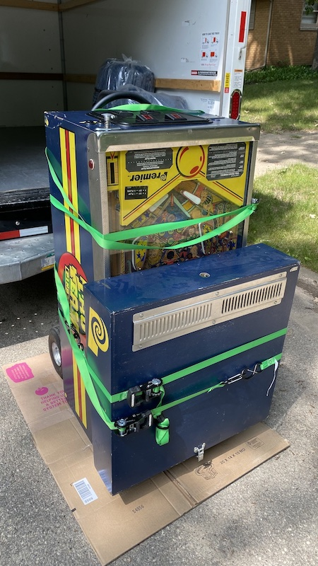
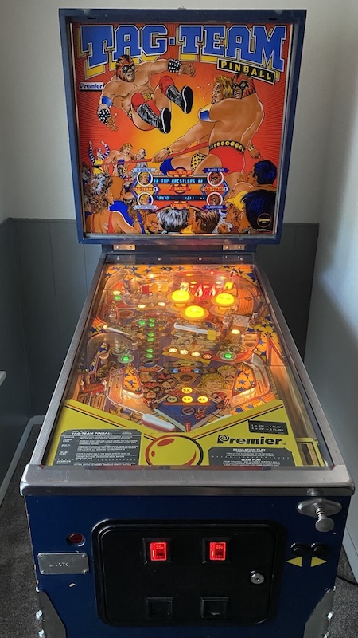
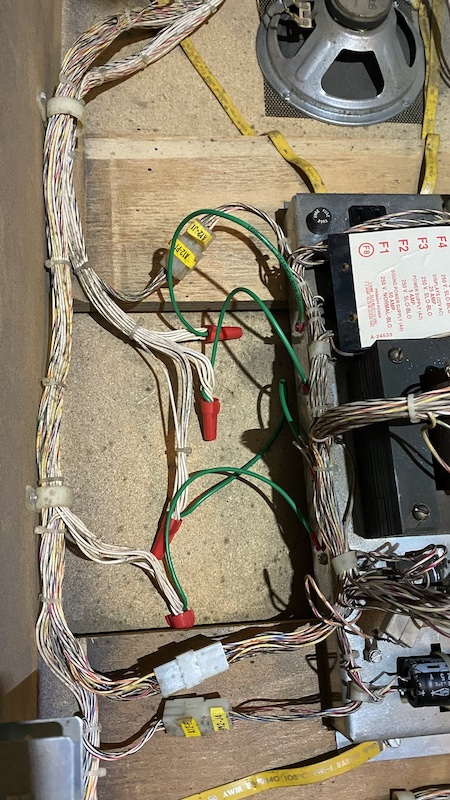
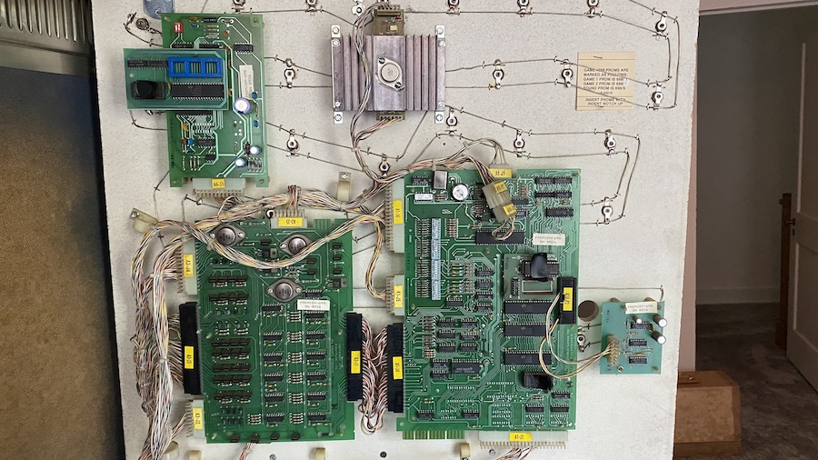

I'm on my last "free week" of the summer, and I managed to actually fix a couple of things, while others are in progress.
 
There's a pinball machine in my house now. Like any piece of machinery or electronics with almost 40 years on the clock, it has its issues. The first thing recommended by PinWiki was a ground mod. The left kicker wasn't firing, and there were various random glitches happening with the electronics, so I went ahead and did this mod, replacing four Molex connectors with crimped eyelets screwed to the main transformer housing.
 This didn't seem to fix anything, so I decided to disconnect anything I could in the set of circuit boards behind the back glass and spray contact cleaner in all the edge connectors and Molex connectors near them. After this it seemed like the random glitches and crashes ceased, so that was one win.

The left kicker not working ended up being due to a busted fuse, possibly from transport, but who knows. After a few rounds of play, the glitches came back. I got more aggressive with the contact cleaner, pulling EPROMs, cleaning those up, the sockets, and after putting it all together everything seems like it's in a good spot. I suspect at least one of the crimped connectors (that are extremely out of production and obsolete) on the edge connectors is a bit loose, and it might just be something that happens from time to time. The list of ground mods on PinWiki includes some for the circuit boards, and I may do those, but those only really help ground. If one of the other lines on the bus is loose that won't be helped by that, so it'd take a lot more testing with individual lines to see which ones are loose. It's an intermittent issue, so I'd rather not deal with it unless it's necessary.
Car batteries are easy, usually, but in this case the retaining clip for the strap was hard to reattach. The nut had a little corrosion inside that needed coaxing out, and I ended up actually taking a mallet to the end of the socket wrench extension to get the thing kind of...bashed into the bolt where I was able to actually get the threads to mate up and get the thing put back together. This was the most irritating thing I had to do all week, I think.
This one I technically haven't fixed yet, but I'm close. The technical manuals are available online, but the hardest thing that I'm fighting is actually routing the various flat ribbon cables around the body of the device from one board to the other. I did replace a belt on one of the pulleys, but I think one of the cables is impinging on one of the belts, so I'll have to take it apart again and try to tape things down some more.